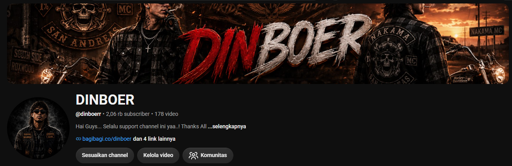

Spesialis produksi konten video pendek yang berkonversi tinggi untuk TikTok Shop, Shopee Video, dan Media Sosial Anda.
Saya adalah Video Editor dan Content Clipper yang mengutamakan efisiensi dan keakuratan fakta, berfokus pada produksi konten video pendek yang cepat dan berkonversi tinggi untuk TikTok Shop dan Shopee Video.
Memiliki rekam jejak dalam mengeksekusi produksi video jarak jauh (remote) secara mandiri, menciptakan hook yang menarik, dan memanfaatkan alat AI untuk menghasilkan aset yang langsung bisa dieksekusi. Berhasil membangun audiens gabungan lebih dari 4.200 pengikut di YouTube, Instagram, dan TikTok. Siap memberikan kontribusi langsung sebagai freelancer jarak jauh dengan memanfaatkan keahlian tingkat lanjut dalam CapCut, desain grafis, dan tren video e-commerce.
Hasil editing, kliping konten, dan adaptasi video.

Contoh gaya pengeditan untuk konten vertikal seperti vlog sinematik, promosi kafe (Bray Koffie), dan konten romanticizing lokasi. Menggunakan transisi dinamis, penyesuaian warna, dan audio yang selaras dengan tren algoritma saat ini guna memaksimalkan retensi audiens.
Lihat TikTok SayaFreelance / Remote
Bray Koffie | Jatinangor, Jawa Barat
Kopi Santuy | Bandung, Jawa Barat
Siap memberikan kontribusi maksimal untuk proyek konten video Anda. Hubungi saya melalui salah satu platform di bawah ini.